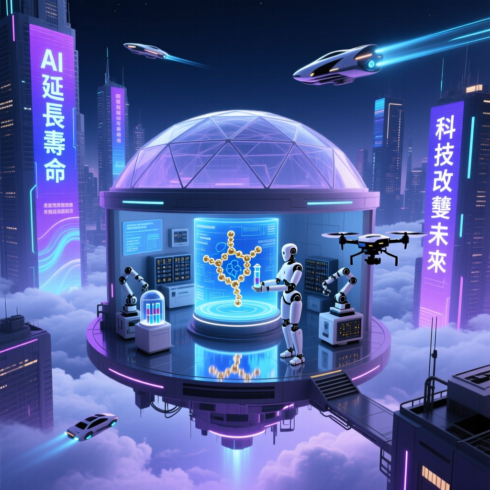

諾貝爾獎得主戴密斯·哈薩比斯揭示 AlphaFold 如何將數十年研究縮短至幾分鐘，AI 設計藥物已進入臨床試驗，普通人如何抓住這場生物醫學革命？

AlphaFold 2 以原子級精度預測蛋白質 3D 結構，誤差小於 1 埃（Ångström），準確度超越實驗方法 3 倍
原本需要數十年的研究工作縮短至幾分鐘，AlphaFold Server 為科研人員提供免費的 AF3 結構預測服務
2025 年已有 AI 設計藥物進入臨床試驗，AlphaFold 3 可模擬蛋白質與藥物、DNA、RNA 的相互作用
哈薩比斯與 John Jumper 榮獲 2024 年諾貝爾化學獎，表彰 AlphaFold 對科學的開創性貢獻
| 模型版本 | 發布時間 | 核心能力 | 準確度 |
|---|---|---|---|
| AlphaFold 1 | 2018 年 | CASP13 競賽冠軍，首次證明 AI 可行性 | 傳統方法水平 |
| AlphaFold 2 | 2020 年 | 解決 50 年蛋白質折疊問題，預測 2 億種結構 | <1Å 誤差（原子級） |
| AlphaFold 3 | 2024-2025 年 | 蛋白質 + 藥物+DNA+RNA 複合物模擬 | 進一步提升 |
| AlphaFold Server | 2024 年 | 免費科研平台，非商業研究使用 | AF3 引擎 |
順流而下，全面武裝。普通人應該積極學習並應用 AI 技術，以抓住新興機會。AI 不僅是科學家的工具，它將成為每個人日常生活的一部分。
— 戴密斯·哈薩比斯（Demis Hassabis），Google DeepMind 創辦人兼 CEO，2024 年諾貝爾化學獎得主